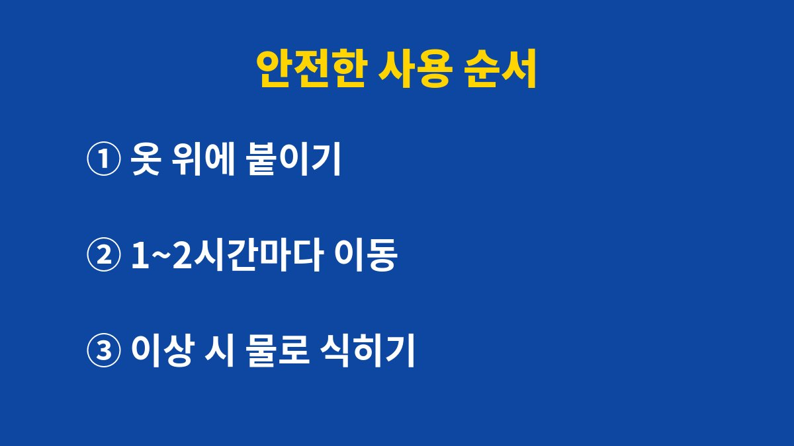

핫팩 저온화상은 뜨겁다고 느끼지 못할 만큼 낮은 열이 같은 자리에 오래 닿아서 생기고, 피부에 직접 붙이지 않는 것이 가장 확실한 예방이다.
한국소비자원과 소방청 등이 겨울마다 안내하는 내용을 바탕으로 원인부터 응급 대처까지 순서대로 적는다.
일반 화상은 뜨거운 물이나 불에 닿는 순간 생긴다.
저온화상은 다르다.
약 44℃ 안팎의 열이라도 몇 시간 이어서 닿으면 피부 깊은 곳까지 손상될 수 있다는 것이 소비자원 등의 안내다.
처음에는 따뜻해서 기분이 좋을 뿐이라 알아차리기 어렵다.
피부 표면에서 느끼는 온도와 진피까지 전달되는 열은 다르다.
그래서 따끔거리지 않았다는 이유로 괜찮다고 판단하면 늦는다.
출근길에 붙인 핫팩을 점심 무렵 떼어 보니 그 자리만 붉게 달아올라 있는 경우가 대표적이다.
전기장판 위에서 깜빡 잠들었다가 허벅지나 종아리에 붉은 무늬가 남는 경우도 같은 원리다.
이때 피부 표면은 멀쩡해 보여도 안쪽 손상은 며칠 뒤에야 물집이나 통증으로 드러나기도 한다.
겨울 야외 행사나 야구장·등산에서 핫팩을 여러 장 붙이는 경우에는 장수가 늘어난 만큼 열도 겹쳐서 위험이 커진다.
추위를 많이 타는 사람일수록 한 장이 아니라 두세 장을 같은 자리에 붙이는 일이 잦다.
정강이, 발목, 허리, 배처럼 피부 아래 지방층이 얇거나 옷에 눌리는 부위에서 자주 생긴다.
반대로 지방층이 두꺼운 곳은 열이 덜 전달되어 증상이 늦게 나타난다.
같은 핫팩을 같은 시간 썼는데 한 사람만 화상을 입는 이유가 여기에 있다.
같은 핫팩이라도 어디에, 얼마나 붙이느냐에 따라 위험이 크게 달라진다.
특히 열을 느끼는 감각이 둔한 사람은 화상이 진행되는 동안에도 불편함을 말하지 못한다.
표에서 가장 자주 놓치는 항목은 압박하는 자세다.
허리에 붙인 핫팩 위로 의자 등받이가 닿거나 가방끈이 눌러 두 시간 가까이 지나면, 내가 쓰는 열이 빠져나가지 못한다.
이럴 때는 붙이는 위치를 등 전체가 아니라 옷 안쪽 가장자리나 배 위로 옮기는 정도로 바꿔도 부담이 줄어든다.
전기장판과 전기방석도 같은 원리가 적용된다.
낮은 온도로 설정해도 잠든 채 몸이 같은 자세로 몇 시간 누워 있으면 닿은 쪽 피부만 열을 받는다.
타이머 기능이 있는 제품이라면 잠든 뒤 한두 시간 안에 꺼지도록 맞추는 정도가 부담이 적다.
| 상황 | 위험한 이유 | 안전한 쪽 |
|---|---|---|
| 피부에 직접 붙이기 | 열이 그대로 전달된다 | 속옷이나 옷 위에 붙인다 |
| 붙인 채 잠들기 | 수 시간 같은 자리에 닿는다 | 잠들기 전에 뗀다 |
| 압박하는 자세 | 바닥·허리띠에 눌려 열이 갇힌다 | 눌리지 않는 위치에 둔다 |
| 어르신·당뇨 등 감각 저하 | 뜨거움을 늦게 느낀다 | 보호자가 자주 살핀다 |
포장지에는 피부에 직접 붙이지 말라는 안내와 사용 시간이 적혀 있다.
찢어진 제품이나 내용물이 굳어 한쪽만 뜨거운 제품은 쓰지 않는다.
신발용 핫팩은 양말 위에 붙이고, 발바닥은 체중에 눌려 열이 쌓이기 쉬우니 발등 쪽으로 옮겨 쓴다.
손난로 형태의 제품은 주머니 안에서 허벅지에 맞닿은 채 오래 있지 않게 한다.

아이에게 핫팩을 쓸 때는 어른이 붙여 주고 어른이 자주 확인한다.
아이는 뜨거움을 말로 표현하기 어렵고, 졸리면 그대로 잠들기 쉽다.
특히 유아용 침구 안에 핫팩을 넣어 두는 일은 하지 않는 편이 안전하다.
붉어진 자국을 발견하면 일단 핫팩을 떼고 흐르는 깨끗한 물로 10~20분 안팎 식힌다.
얼음을 바로 대면 피부가 더 상하므로 차갑게 흐르는 물이 낫다.
물집은 터뜨리지 않는다.
연고나 민간요법을 임의로 바르지 말고, 물집이 있거나 통증이 하루 넘게 이어지면 병원 진료를 받는다.
저온화상은 겉보기보다 깊은 경우가 많아서 얼굴·관절 부위나 넓은 범위라면 처음부터 병원에 가는 편이 빠르다.
핫팩을 떼고 나서도 붉은 자국이 하루 이틀 가라앉지 않는 경우에는 일반 화상보다 회복이 더디다.
병원에 가기 전에는 자국에 연고를 두껍게 바르지 말고, 마른 거즈로 가볍게 덮어 마찰만 막는 정도로 둔다.
화상 부위를 반지나 시계로 조이고 있었다면 부어오르기 전에 먼저 빼 둔다.
통증이 심하거나 피부색이 하얗게 변하고 감각이 없어진 경우에는 지체하지 않고 응급실을 찾는다.
이 방법이 맞지 않는 경우도 있다.
피부가 벗겨졌거나 상처가 이미 열린 곳은 물로 오래 식히기보다 깨끗한 거즈로 덮고 바로 진료를 받는다.
오늘 쓸 핫팩부터 포장지의 사용 시간과 부착 위치 안내를 한 번 읽는다.
핫팩은 붙여 둔 시간을 줄이는 것만으로도 위험이 눈에 띄게 낮아진다.
붉은 자국이 사흘 넘게 가라앉지 않으면 피부과나 화상 전문 병원에서 확인한다.
주변에 감각이 둔한 어르신이나 어린 가족이 있다면 오늘 저녁 붙인 자리를 한 번 물어봐 주는 것도 방법이다.
겨울마다 반복되는 사고라서 한 번 알아 두면 올해뿐 아니라 내년 겨울에도 쓸 수 있다.
참고 자료: 한국소비자원 「핫팩 사용 시 저온화상 주의」 안내(2026년 11월 확인) · 소방청 겨울철 안전 안내(2026년 11월 확인)
※ 2026년 기준 공식 기준을 바탕으로 정리한 일반 건강 정보이며, 증상이 계속되거나 지병이 있다면 전문의와 상담하길 바란다.